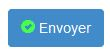
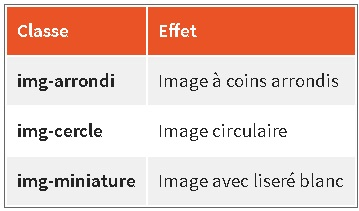

Une page Web contient du texte et des images, mais aussi un certain nombre d'éléments fréquents: listes, tableaux, formulaires, icônes, boutons. Créer une
harmonie dans la présentation de tous ces éléments n'est pas une tâche aisée.
Je vais voir comment Bootstrap permet de créer un rendu visuel cohérent pour que tous ces éléments cohabitent de façon esthétique.
Bootstrap propose une mise en forme élégante des listes. J'en ai vue une sur la page d'exemple :
Voici les sous-espèces des tigres :
Tigre de Sibérie
Tigre de Chine méridionale
Tigre de Bali
Tigre de d'Indochine
Tigre de Malaisie
Tigre de Java
Tigre de Sumatra
Tigre du Bengale
Tigre de la Caspienne
Donc, je n'ai même pas besoin d'ajouter une classe pour avoir ce rendu (pas vraiment différent du rendu d'une liste habituelle).
b./ Sans style
Il existe la classe list-unstyled, à appliquer à la balise < ul>, ce qui donne donc < ul class="list-unstyled">, qui supprime les puces. Voici
le résultat sur la liste de la page :
c./ En ligne
Il peut arriver de vouloir une liste... en ligne. On pourrait dire que ce n'est pas vraiment une liste mais pourquoi pas ? On peut imaginer une utilisation pour un
menu. Il suffit d'utiliser la classe suivante :
list-inline
Donc < ul class="list-inline">. Voilà ce que ça donne sur la page :
2.) Descrptions
a./ Classique
Les descriptions sont aussi bien traitées par Bootstrap. Par exemple, lorsque j'écris le code d'une liste de termes à définir, sans même avoir besoin d'ajouter
une classe, voici le rendu que j'obtiens:
Une description verticale
b./ Horizontal
Pour obtenir une présentation horitontale, il suffit d'utiliser la classe suivante :
dl-horizontal
...ce qui donne < dl class="dl-horizontal">. Voici à la figure suivante l'effet sur la même liste :
Une description horizontale
3.) Les tableaux
Plusieurs mises en forme sont prévues pour les tableaux. Cf l'exemple de page N°1. Analysons les classes utilisées...
a./ Classe "table"
C'est la classe de base pour les tableaux, elle fixe quelques styles et crée des lignes de séparation horizontales :
Effets de la classe table
b./ Classe "table-bordered"
C'est la classe pour avoir des bordures :
< table class="table table-bordered">
Ce qui donne la figure suivante:
Effets de la classe table-bordered
c./ Classe "table-striped"
Cette classe ajoute un fond gris très léger sur les lignes impaires :
< table class="table table-bordered table-striped">
Effets de la classe table-striped
d./ Classe "table-condensed"
Cette classe permet de condenser le tableau pour qu'il occupe moins de place verticalement :
< table class="table table-bordered table-striped table-condensed">
Ce qui donne la figure suivante :
Effets de la classe table-condensed
e./ Tableau adaptable avec la classe "table-responsive"
Que se passe-t-il pour un tableau quand on réduit la largeur de l'affichage ? Les colonnes du tableau se réduisent en conséquence jusqu'à rendre l'apparence ni
très esthétique, ni très lisible de la figure suivante :
Effets sans la classe table-responsive
En englobant le tableau avec la classe table-responsive, on fait appraître une barre de défilement lorsque la largeur de l'affichage passe au-
dessous de 768px (voir figure suivante) :
< section class="col-sm-8 table-responsive">
< table class="table table-bordered table-striped table-condensed">
Barre de défilement avec la classe table-responsive
f./ Un peu de couleur dans les tableaux
J'ai la possibilité de colorer le fond des lignes des tableaux classes info, success, danger, warning et active. Voici le tableau
de mon exemple, mais avec un peu de couleur :
Réf Exemple de page 1
Mais évidemment cette possibilité de colorisation prend tout son sens dans une gestin dynamique de données, pour faire apparaître par exemple des enregistrements
possédant certaines caractéristiques.
II./ Formulaires
1.) Formulaire de base
Si on n'utilise aucune classe particulière dans une balise < form>, on obtient une disposition en ligne. Prenons l'exemple d'un formulaire simple :
< form>
< legend>Légende< /legend>
Text : < input type="text">
Textarea : < textarea id="textarea">< /textarea>
Select :
< select>
< option>Option 1< /option>
< option>Option 2< /option>
< option>Option 3< /option>
< /select>
< button>Envoyer< /button>
< /form>
Et j'aurai un rendu similaire à celui de la figure suivante :
Un formulaire sans style
Par défaut, les contrôles s'alignent horizontalement. J'aimerais que les contrôles occupent toute la lageur possible. Il faut utiliser la classe
form-control sur chacun des champs pour obtenir cet effet (voir figure suivante).
Effets de la classe form-control
On se rend compte que cette classe ne se contente pas d'élargir les contrôles, elle procède aussi à une mise en forme esthétique. Arrangeons encore ce
formulaire en utilisant des balises < label> et écartons un peu le bouton :
Réf Formulaire
On a gagné en esthétique. On peut encore améliorer l'espacement en utilisant la classe form-group :
Réf Formulaire 2
Ainsi, le formulaire est bien aéré et j'ai enlever la balise < br> qui me servait à espacer le bouton.
2.) La page d'exemple
Réf Page d'exemple 2
Au niveau du style, juste une petite touche :
body { background-color: #DDD; }
[class*="col"] { margin-bottom: 20px; }
img { width: 100%; }
.well {
background-color: #CCC;
padding: 20px;
}
Le fond d'un léger gris met bien en valeur le texte et les photos. Quant au formulaire (concerné par la classe well), c'est l'objet de ce
chapitre...
a./ Les classes "radio" et "checkbox"
Bootstrap propose l'utilisation d'une classe particulière pour les cases à cocher (checkbox) et les zones d'option (radio). Je l'ai utilisée dans le
formulaire de la page d'exemple N°2.
b./ La classe well, un peu de style, un joli bouton et un texte d'aide
La classe well provoque une jolie stylisation (change la dimension et la couleur de fond).
On peut ajuster la dimension en ajoutant la classe well-lg pour agrandir ou well-sm pour réduire.
Note : dans la page d'exemple 2, j'ai aussi peaufiné en ajoutant des règles de style à la page...
La dernière touche a consisté à améliorer l'aspect du bouton avec 2 classes que je verrai plus loin dans le cours :
< button class="btn btn-primary" type="submit">Envoyer< /button>
Il ne reste plus qu'à rendre plus discret le texte d'aide situé au-dessous de la zone de texte, ce que j'accomplirai avec la classe
help-block :
< p class="help-block">Vous pouvez agrandir la fenêtre< /p>
3.) Formulaire horizontal
Pour réaliser un formulaire horizontal, je vais utiliser tout ce que je viens de voir en exploitant la classe form-horizontal et une grille
pour positionner les étiquettes et les contrôles :
Réf Formulaire 3
Les étiquettes disposent de 2 colonnes et les champs de saisie de 10 colonnes. On peut voir l'utilisation de la classe pull-right pour
envoyer le bouton vers la droite. L'alignement à droite des étiquettes est réalisé par la classe control-label. Voici à la figure suivante
une visualisation du découpage.
Décryptage du formulaire horizontal
4.) Formulaire en ligne
Il arrive qu'on ait besoin d'avoir un formulaire disposé sur une ligne, par exemple dans une barre de navigation. Je sais ce que donne un formulaire
élémentaire sans retour à la ligne, et ce n'est pas très joli. Je peux arranger ça avec tout ce que j'ai vu et en précisant la classe
form-inline :
Réf Formulaire en ligne
C'est beaucoup mieux (ou juste un peu) !
Note : j'ai utilisé une étiquette invisible pour la zone de texte. Il est conseillé d'avoir toujours une étiquette pour chaque contrôle pour les lecteurs
d'écran (accessibilité), la classe sr-only permet de rendre cette étiquette invisible.
5.) Les classes input-group, input-group-addon et input-group-btn à l'oeuvre
a./ Accoler une information à un contrôle
Les classes input-group et input-group-addon servent à accoler une information à un contrôle de formulaire :
Réf Formulaire en ligne avec input-group-addon
Toujours dans le même exemple, on peut aussi les utiliser conjoitement pour accoler devant et derrière.
b./ Accoler un bouton à un contrôle
On peut aussi accoler un bouton avec la classe input-group-btn :
Formulaire en ligne avec input-group-btn
Note : J'en ai même accolé un addon et deux boutons...
c./ Accoler une case à cocher ou un bouton radio à un contrôle
Pour ajuster un formulaire, il est parfois utile de jouer sur la taille des contrôles. Pour ce faire, Bootstrap propose les classes suivantes :
input-lg : pour agrandir un champs
input-sm : pour rétrécir un champs
Réf Formulaire 7
Note : on joue ici uniquement sur la hauteur du contrôle, la largeur étand définie par la grille.
7.) Stylisation selon l'état
Bootstrap embarque des classes de stylisation des zones de saisie selon l'état. Voici un exemple :
Réf Formulaire 8 : stylisation des champs
La version 3.1 de Bootstrap a prévu la possibilité d'ajouter une icône pour améliorer l'effet visuel. Je verrai comment Bootstrap permet d'utiliser des
icônes dans le chapitre suivant. Ici, je vais juste compléter l'exemple précédent, sans rien expliquer, en y ajoutant des icônes.
Réf Formulaire 8 avec des icônes
Attention: les icônes dans les contrôles ne fonctionnent que pour les balises input qui comportent la classe form-control
Dans ces exemples, il y a peu d'actions possibles car, pour le moment, je n'ai pas prévu d'interactivité. Alors, un petit exemple : je vais faire un
formulaire pour lequel je vais tester la saisie pour vérifier que le texte fait au moins 4 caractères. Si ce n'est pas le cas, on change le style de la zone de
texte et on fait appraître un message d'avertissement, comme à la figure suivante :
Formulaire interactif avec un message à afficher
Tant qu'à faire, on veut aussi que le message d'avertissement disparaisse au bout de 4 secondes et que le tout se fasse avec fluidité. En combinant Bootstrap
et jQuery, c'est un jeu d'enfant :
Réf Formulaire interactif
8.) Un générateur de formulaires
Le site bootstrip propose un générateur de
formulaires pour Bootstrap (voir figure suivante).
Un générateur de formulaires pour Bootstrap
On construit le formulaire avec de simples glisser-déposer. On renseigne ensuite les paramètres avec un formulaire qui apparaît en fenêtre modale. A la fin,
on n'a plus qu'à copier le code HTML. On ne peut réaliser que des formulaires horizontaux, mais une adaptation du code permet facilement de réaliser d'autres
sortes de formulaires.
III./ Boutons, icônes et images
1.) La page d'exemple
Voici la nouvelle version de la page d'exemple :
Réf Page d'exemple 3
Qu'y a-t-il de nouveau ? Déjà un formulaire de recherche dans la partie supérieure droite, avec une zone de texte et un bouton muni d'une icône. Le traitement
de responsive pour ce formulaire est particulièrement remarquable.
Les vignettes des images ont désormais leurs coins arrondis grâce à la classe img-rounded. Le bouton du formulaire de
contact a hérité d'une icône également.
Je vais passer en revue ces nouveautés et détailler les possibilités de Bootstrap pour les boutons, les icônes et les images.
2.) Des jolis boutons
a./ Les boutons standards
Pour créer un bouton avec Bootstrap il suffit d'ajouter les classes btn et btn-default à une balise < button>, < a>
ou encore < input> :
< button type="button" class="btn btn-default">Bouton de base< /button>
< a class="btn btn-default" href="#">Bouton avec lien< /a>
< input type="button" class="btn btn-default" value="Bouton avec input">
Ce qui me donne la figure suivante :
Apparence des boutons Bootstrap standards
Le rendu est le même, tout dépend du contexte d'utilisation.
b./ Les différentes types de boutons
L'aspect par défaut est un gris avec le fond blanc. Il existe d'autres possibilités plus colorées :
< button type="button" class="btn btn-primary">Bouton standard< /button>
< button type="button" class="btn btn-success">Réussite< /button>
< button type="button" class="btn btn-info">Information< /button>
< button type="button" class="btn btn-warning">Avertissement< /button>
< button type="button" class="btn btn-danger">Danger< /button>
< button type="button" class="btn btn-link">Lien< /button>
Ce qui donne les boutons visibles à la figure suivante :
Des boutons colorés
A utiliser selon les situations et à faire varier selon l'humeur !
c./ Dimension des boutons
On peut aussi ajouter la dimension du bouton :
< button type="button" class="btn btn-primary btn-lg">Grand Bouton< /button>
< button type="button" class="btn btn-primary">Bouton standard< /button
< button type="button" class="btn btn-primary btn-sm">Petit bouton< /button>
< button type="button" class="btn btn-primary btn-xs">Très petit bouton&l; /button>
Pluieurs dimensions de boutons
d./ Boutons "block"
La classe btn-block règle la dimension du bouton sur la dimension de son contenant. Voici un exemple :
Réf Bouton N°1
e./ >Grouper des boutons
Il est possible de grouper des boutons horizontalement avec la classe btn-group. Ce groupement peut s'effectuer aussi verticalement avec la
classe btn-group-vertical. Voici un exemple avec les deux groupements :
Réf Bouton N°2
Il est possible de créer des organisations plus complexes avec la classe btn-toolbar :
Réf Bouton N°3
On peut dimensionner un groupement :
Réf Bouton N°4
f./ Boutons justifiés
Si je souhaite que mes boutons se répartissent harmonieusement et uniformément dans un contenant, je dois utiliser la classe btn-group-justified
en plus de btn-group :
Réf Bouton N°5
Cet exemple utilise des balises < a>. On peut réaliser la même chose avec des balises < button> ou < input> à condition d'utiliser la classe
< btn-group
pour chaque bouton :
Réf Bouton N°5
Et si je veux des styles différents pour mes boutons et sortir des couleurs standards de Bootstrap, je peux créer mes propres styles. Si je ne suis pas très
inspiré, il existe un générateur simple et pratique sur le site charliepark.org.
Il suffit de récupérer le code et de l'insérer dans ma feuille de style.
L'intégration dans un bouton (ou autre) est simple :
< button type="button" class="btn btn-custom">Mon beau bouton< /button>
3.) De jolies icônes
a./ Les icônes de Glyphicons
Bootstrap propose 200 icônes de Glyphicons. L'intégration d'une icône est facile parce qu'il suffit
d'utliser la balise < span>. Pour le formulaire de contact de la page d'exemple, le bouton est amélioré en le complétant par une icône :
< button class="btn btn-primary" type="submit">< span class="glyphicon glyphicon-ok-sign">< /span> Envoyer< /button>
La syntaxe est toute simple. On utilise une balise < span> avec deux classes. La principale est glyphicon suivi de la classe qui
correspond à l'icône à afficher glyphicon-*. On peut ainsi créer d'élégantes barres de boutons :
Réf Les icônes
Question : et si on veut une icône colorée ?
Comme il s'agit de polices, il suffit d'utiliser du style :
< button class="btn btn-primary" type="submit">< span class="glyphicon glyphicon-ok-sign" style="color:#4f4;">< /span> Envoyer< button>
Ce qui me donne le résultat de la figure suivante :

Une icône colorée
Note : on peut mettre ces icônes ailleurs que sur des boutons... Partout où l'on peut écrire en fait !
Rien n'empêche évidemment de sauter des lignes. On peut ainsi créer des boutons en séparant bien l'icône du texte :
Icône 2
b./ Des boutons ronds ?
Il est facile, en ajoutant un peu de style, de créer des boutons ronds qui conviendront à merveille aux icônes. Voici un exemple de style ajouté :
.btn-lg {
width: 50px;
height: 50px;
border-radius: 25px;
}
Et le code HTML :
Réf Icône 3
c./ Les icônesde Font Awesome
Le site Font Awesome propose une collection de 675 icônes toutes prêtes pour Bootsrap. Evidemment elles
ne sont pas intégrées de base dans Bootstrap et il faut déclarer le fichier CSS pour pouvoir les utiliser. Le site propose
plusieurs possibilités pour le faire :la plus simple étant d'utiliser le CDN :
< link href="https://maxcdn.bootstrapcdn.com/font-awesome/4.7.0/css/font-awesome.min.css" rel="stylesheet">
Une fois le fichier CSS déclaré, je peux utiliser les icônes. L'icône doit être intégrée avec une balise en ligne, par exemple < i>, que tous les exemples
du site utilisent, mais d'un point de vue sémantique la balise < span> serait plus adaptée. Le site propose une
galerie d'exemples. On peut insérer une icône directement dans un texte :
Il faut déverrouiller < i class="fa fa-unlock">< /i> pour sortir < i class="fa fa-arrow-right">< /i>
Voir figure suivante :
Icônes dans du texte
On peut aussi dimensionner les icônes selon le contexte :
Réf Icône 4
On peut aussi très facilement créer une liste dont les éléments sont bien identifiés avec une icône :
Réf Icône 4
Il existe bien d'autres possibilités comme la rotation des icônes, leur animation, leur empilement, que je peux découvrir en consultant
la page d'exemples du site.
4.) Mise en forme des images
Bootstrap donne la possibilité de modifier l'apparence des bordures et des images. Il y a pour cela 3 classes utilisables :

Les 3 classes (à traduire en anglais !) pour images
VOici un exemple illustratif de ces trois effets :
Réf Les 3 classes pour images
Note : je peux également rendre les images adaptatives facilement avec la classe img-responsive. Cette classe possède 3 règles :
display: block;
max-width: 100%;
height: auto;
Le but est de faire en sorte que l'image occupe toute la place disponible de son contenant.
En résumé
Bootstrap permet une mise en forme élégante des listes, descriptions et tableaux.
Bootstrap permet de réaliser des formulaires classiques, horizontaux ou en ligne. Il permet aussi d'enrichir les contrôles en jouant sur leur dimension ou leur
style.
Bootstrap permet de créer des boutons colorés, seuls ou groupés, de diverses dimensions.
Bootstrap comprend une collection d'icônes vectorielles faciles à intégrer comme des caractères.
Bootstrap prévoie la mise en forme des images avec des coins arrondis ou avec un effet de diapositive.